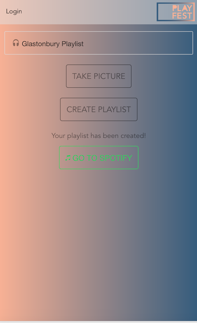

What is Playfest?
Playfest is an app in which the user can take a picture via their phone camera of a festival or concert poster, log in to Spotify and get a playlist with the top ten songs of artists displayed on that festival poster. The back end is built with Express and Node.js, and the front end with Ionic which uses AngularJS. Our app uses an optical character recognition (OCR) API and the spotify API.
Challenges
One challenge we faced was figuring out how our app could recognise which words on the poster were relevant to creating our playlists. We tried a few approaches, for example identifying the festival by location or dates and using the Songkick API to cross check the festival and then find relevant artists. However, because there is no consistency in the appearance and format of this information from one poster to the next, none of these strategies produced a reliable solution. We overcame this hurdle when we realised that our OCR software could also recognise the relative size of the text displayed on the page and therefore, since big acts are usually represented with larger text, we could tailor our code to identify those prominent artists. Right now, the OCR is not perfect (for example, it cannot recognise some artists due to warped fonts), but we feel happy we've reached a workable solution and will strive to keep improving our app.
Demo

What is Makers BnB?
Makers BnB is a web app created based on Airbnb to practice CRUD, users and managing edge cases.
What can it do?
- Users can sign-up and log-in
- Users can list new spaces
- Users can list multiple spaces
- Users can name their space, provide a short description of the space, and a price per night
- Users can offer a range of dates where their space is available
- Users can request to hire any space for a range of dates
- When a request has been made, it has to be approved by the user that owns that space
- Once it's approved, a booking is made
- Nights for which a space has already been booked are then no longer available for users to book that space
- Until a user has confirmed a booking request, that space can still be booked for that night
- Users receive an email every time they sign-up, request a space or have a space requested
- Users can pay for their booking through the Stripe API
- Additionally: we have a branch which has a chatroom for the site (branch 9-chat-functionality)


What is thegoodfairy?
The Good Fairy is my university project, which I based on the principles and practices of critical graphic design. The websiteis to help the homeless in London by creating a map of top 10 charities and services based on postcode.